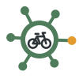

The Rural Mobility Centre of Excellence was set up by Transport East to give local and national partners "a dedicated rural mobility policy resource". The mark is a ring for the Centre with spokes out to the stops it serves, which is roughly how demand-responsive transport works, with one hub and journeys running out to villages on request. The spokes are sage, the Centre is charcoal, and one stop is amber for the journey being made.
These are unofficial concepts, made to show how a plain-JS brand kit works. They aren't the Centre's branding and haven't been endorsed by Transport East. Sources
Rural transport is how people get to a GP, a school, the shops and work. Pick one to send a journey out to it.
The centre changes
The six themes come from the Centre's own work. Each keeps the ring and spokes, puts its own pictogram in the middle and turns its own stop amber. The pictograms are placeholders.
Community Transport

Active TravelDigital ConnectivityAccessibilityDemand-Responsive TransportResearch & Evaluation
In use
The mark is used with the name, as a theme's own lockup, as an app icon and in a browser tab.
 Small cut, 16 to 32px
Small cut, 16 to 32px